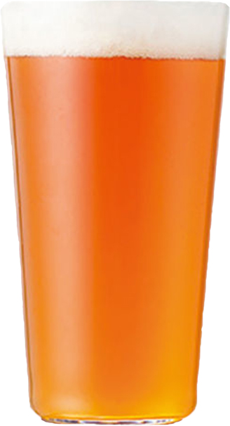
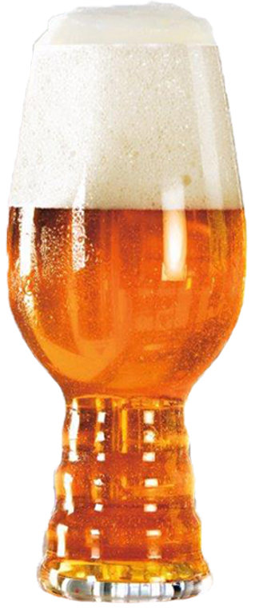
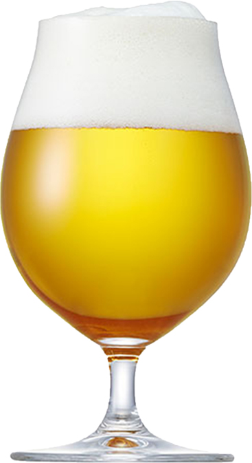
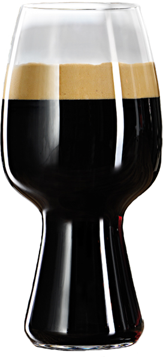

CRAFT BEER
クラフトビールって何？
クラフトビールとは
小規模な醸造所が作る
多規模で個性的なビールのこと
実は・・・
日本で流通しているビールの99%は、世界で100を超えるビアスタイルの中で、
たった数種類に分類されます。
そしてそのほとんどが「ピルスナー」というスタイルなんです。
ビアスタイルは、ビールの色やアロマの特徴、
使用する酵母や発祥の地などに基づいて細かく分類されます。
それぞれのビールは味わい方も楽しみ方もバラエティに富んでいるというのに、
その中のわずか数種類しかしらないなんて、なんてもったいないんだろう！
ビール好きの私たちは割と本気でそう思ってます。
ビールは大きく分けると、たった2種類！！
or
ピルスナー
シュバルツ
ボック
など
ペールエール
IPA
ヴァイツェン
ベルジャンホワイト
スタウト
など
特徴
スッキリとした飲みやすさが特徴。
ゴクゴク飲めて、
喉越しを楽しむビールです。
日本で流通しているビールのほとんどが、
このラガービールです。
フルーティーで豊かな香りと、
深い味わいが特徴。
味わいに個性があるため、
料理に合わせてエールビールを選ぶ、楽しみがあります。
発酵
ラガー酵母での下面発酵
温度は0〜15℃での低温発酵
7〜10日間くらいの発酵期間
エール酵母での上面発酵
温度は20〜25℃くらいの高温発酵
3〜4日間くらいの発酵期間
当店では、
主にエールビールを製造しております！
ALE BEER
代表的なエールビール
Pale
Ale

イギリス発祥の金色〜銅色のビール。
ホップやモルトの豊かな香りが特徴。
イギリスの伝統的なスタイルだが、アメリカに渡り、
ホップの華やかな香りがするアメリカンペールエールが誕生し、
世界的に人気となった。
発祥国：イギリス
発酵方法：上面発酵「エール」
アルコール度数：4.5〜5.5%
IPA

IPAと書いてアイピーエーと読む。
インディアンペールエールの略称で、18C末、
インドがイギリスの植民地だった頃に、
インドに滞在するイギリス人にペールエールを送るために作られた。
海上輸送中に痛まないように、
防腐剤の役割を持つホップを大量に投入したため、香りと苦味が非常に強い。
発祥国：イギリス
発酵方法：上面発酵「エール」
アルコール度数：5.0〜7.5%
Belgian
White

ベルギーのヒューガルデン村で14Cから醸造されていたビールが発祥。
一度消滅したが、1965年おり復活。
コリアンダーとオレンジピールを使用し、
その風味が特徴的なこのスタイルは現在、ベルギーだけでなく
日本やアメリカでも造られており非常に人気。
発祥国：ベルギー
発酵方法：上面発酵「エール」
アルコール度数：4.8〜5.2%
stout

ロンドンのパブで考案されたポーターというビールの改良版。
考案者はアイルランドのギネスビール創業者、アーサー・ギネス氏。
香ばしいナッツやチョコレート、
コーヒーのような香りが特徴的な黒系ビール。
発祥国：アイルランド
発酵方法：上面発酵「ラガー」
アルコール度数：3.8〜5.0%